Curacautín · sector Captrén
El Llaima desde la ventana.
Cabañas para dos y cuatro, junto al río Captrén.
- 89reseñas en Google
- 5,0de nota promedio
- 2tamaños: para dos y para cuatro
- 0páginas propias: sólo Facebook
Antes de reservar
¿Qué hay cerca?
De la puerta de la cabaña hacia la cordillera.
- AL LADO
El río Captrén
Pasa junto a las cabañas.
- A LA VISTA
El volcán Llaima
Se ve desde las cabañas.
- CERCA
Laguna Negra
Por el camino del sector.
- CAMINO ARRIBA
Conguillío
El parque nacional sigue por la misma ruta.
Río, vista y laguna salen de su página; cuánto se tarda lo confirma la casa.
La cordillera, por la ventana.
En el sector Captrén
Lo que rodea las cabañas
-
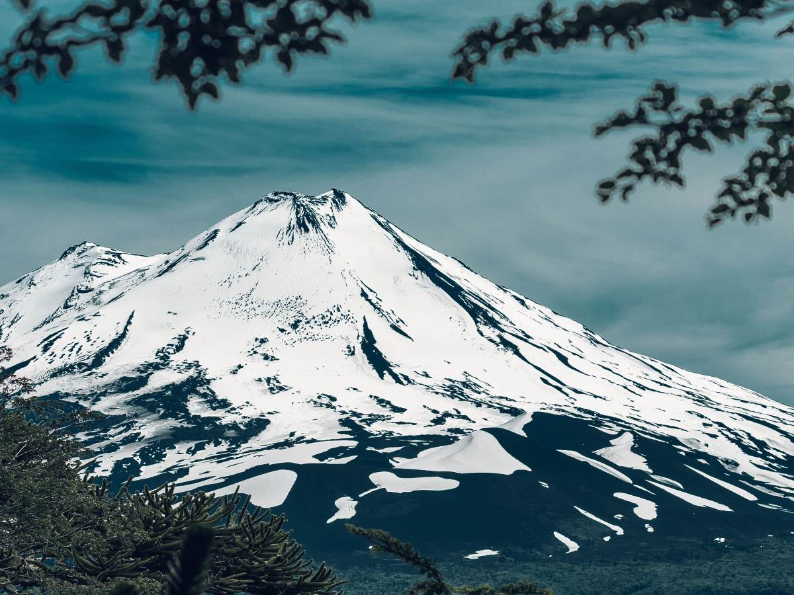
Lo que las distingue
La vista al Llaima
El volcán frente a las cabañas.
-
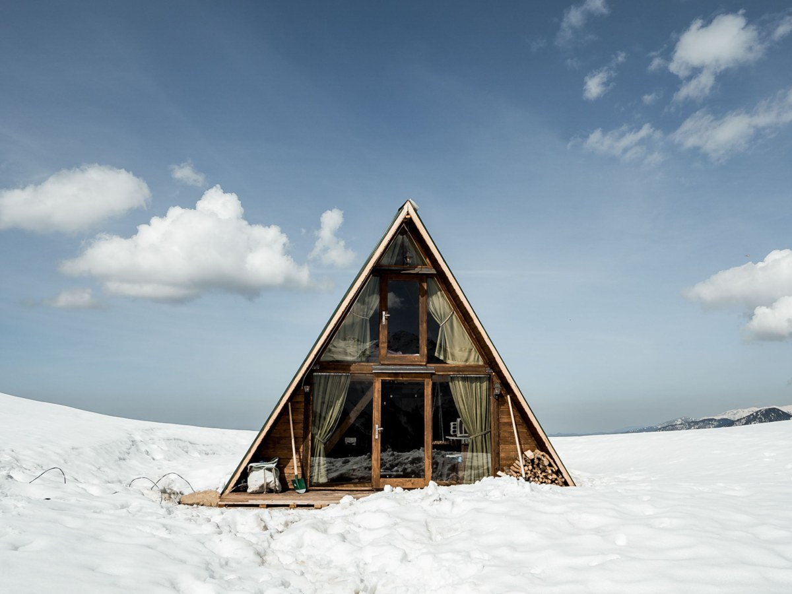
Para la pareja
Cabaña para dos
La más chica.
-
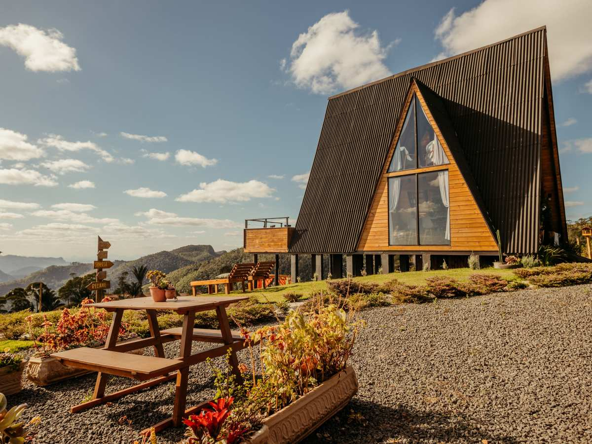
Para la familia
Cabaña para cuatro
La más grande.
-
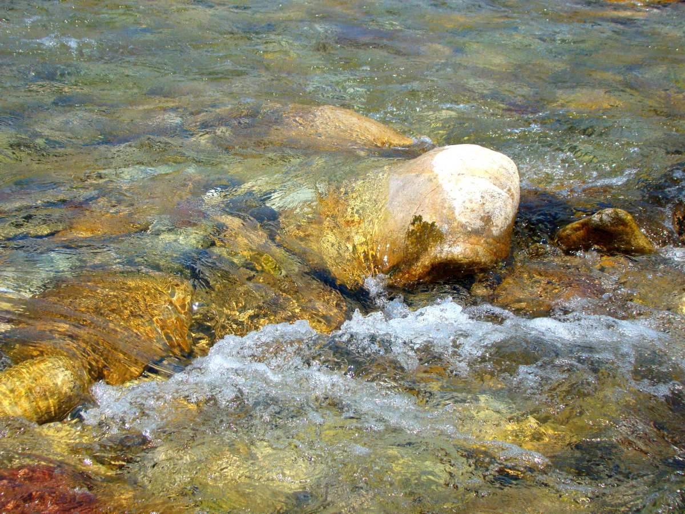
Al lado
Río Captrén
Agua de cordillera.
-
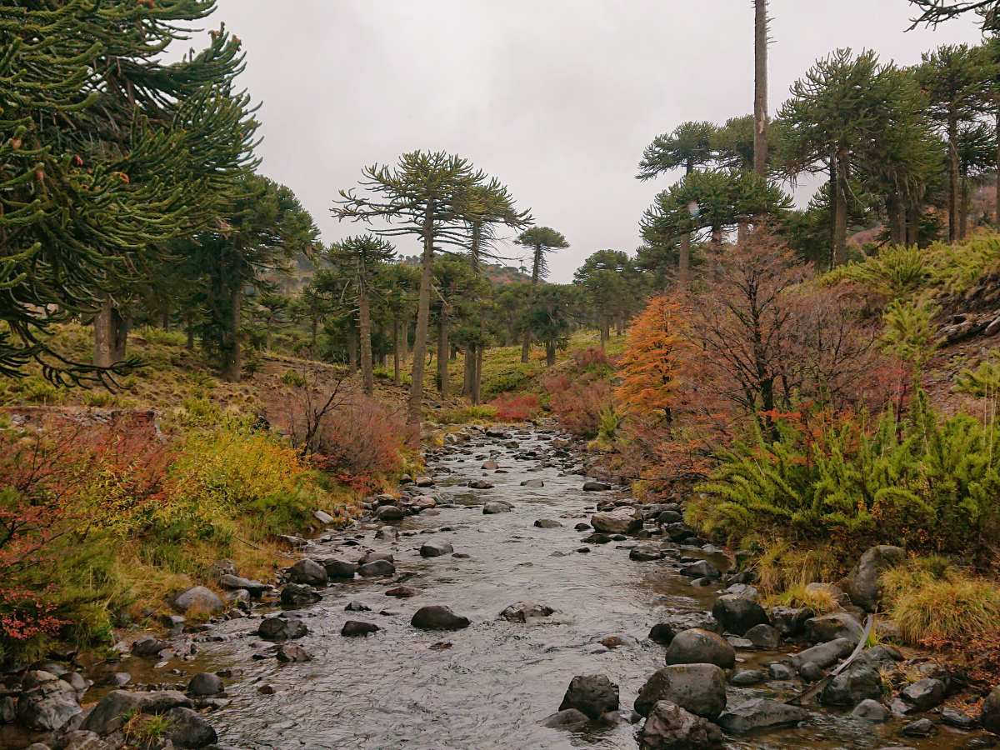
Alrededor
Araucarias
El bosque de la zona del Llaima.
-
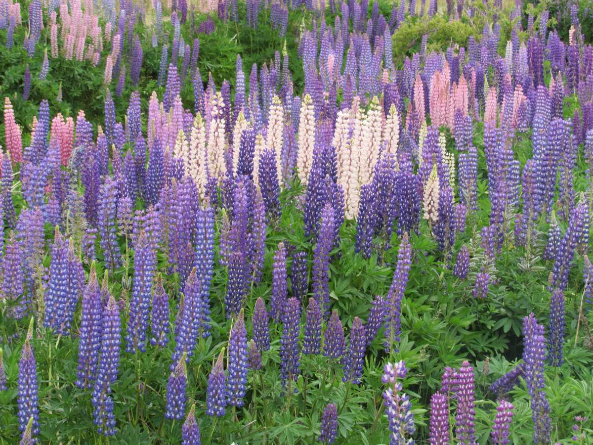
En verano
Lupinos
Las flores del camino.
Vista, tamaños y río salen de su página; araucarias y lupinos son del entorno.
89 reseñas y un 5,0.
A los pies del Llaima
Nieve, piedra y agua
Unos días bajo el volcán
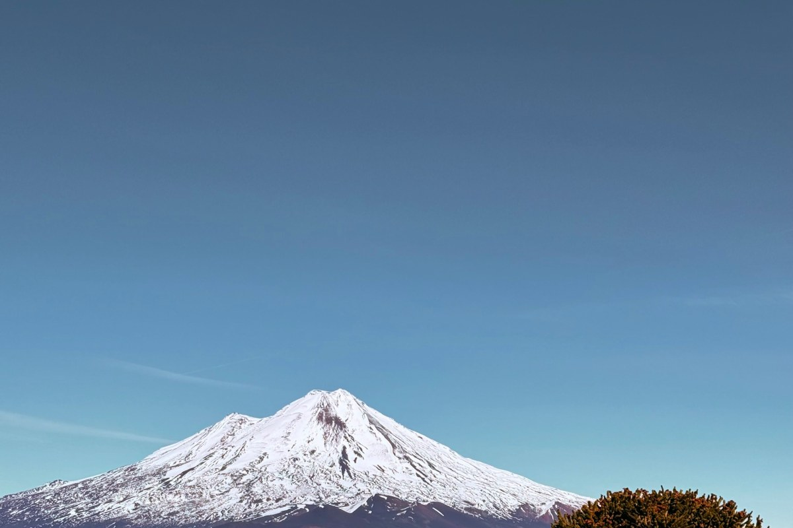
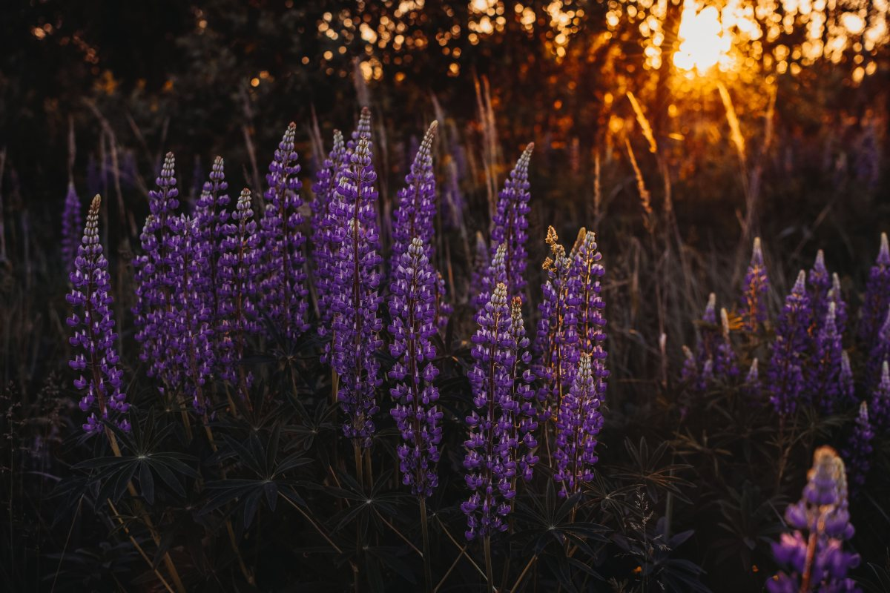
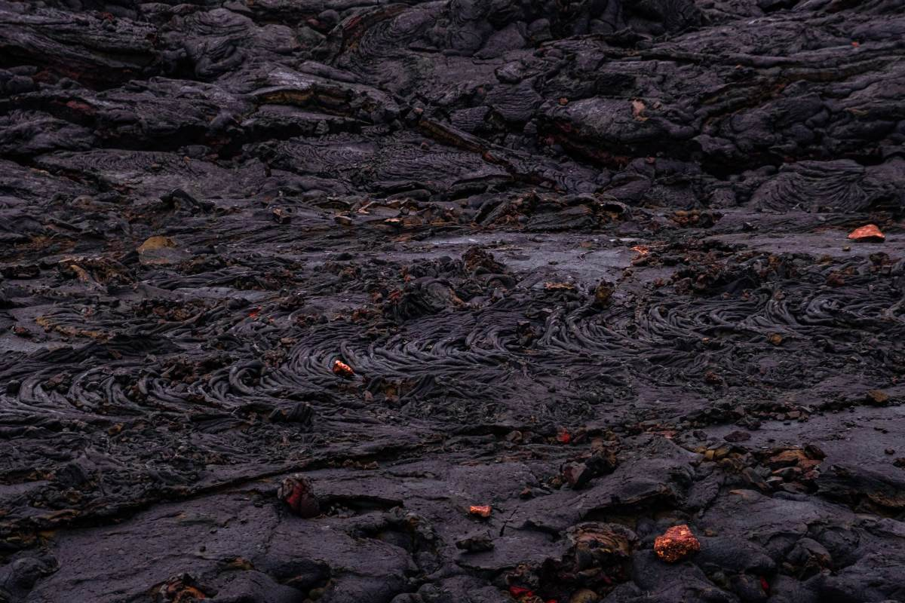
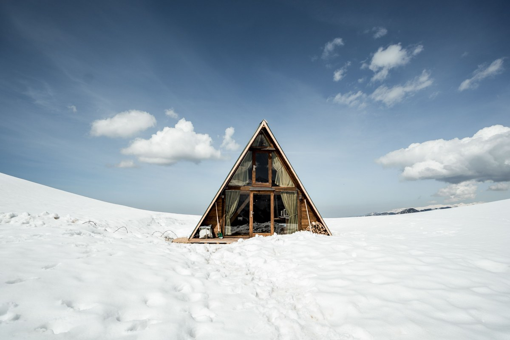
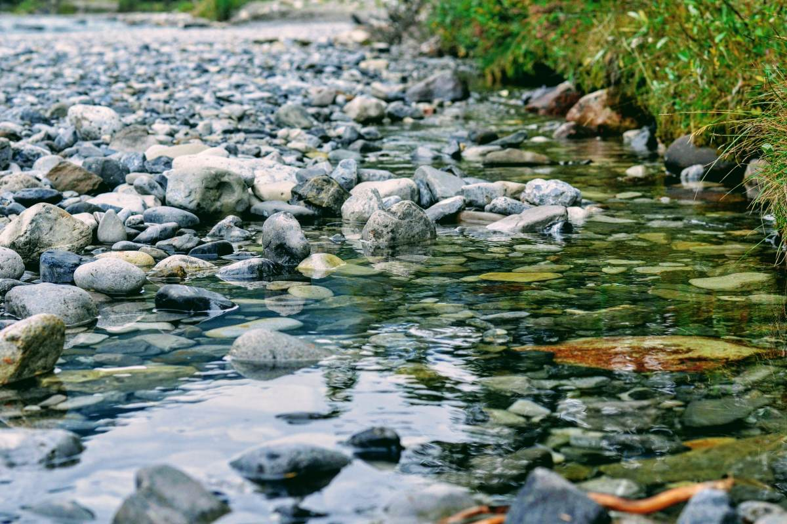
Fotos de referencia: ninguna es de las cabañas.
Dónde estamos
Sector Captrén, Curacautín
- Sector
- Captrén, camino a Conguillío
- +56 9 3424 4416
- Cabañas Mirador Llaima
- Dirección
- Falta la dirección exacta
En invierno el camino puede tener nieve: pregunte cómo llegar.
Sector Captrén, Curacautín Abrir en Google Maps
Para el dueño
Qué es real y qué falta
Lo verificado
Cabañas para dos y cuatro, la vista, el río y la laguna de su página, y las 89 reseñas con 5,0.
Lo de ejemplo
Las araucarias, los lupinos y las fotos.
Lo que falta
La dirección exacta, qué trae cada cabaña, los valores y fotos propias.